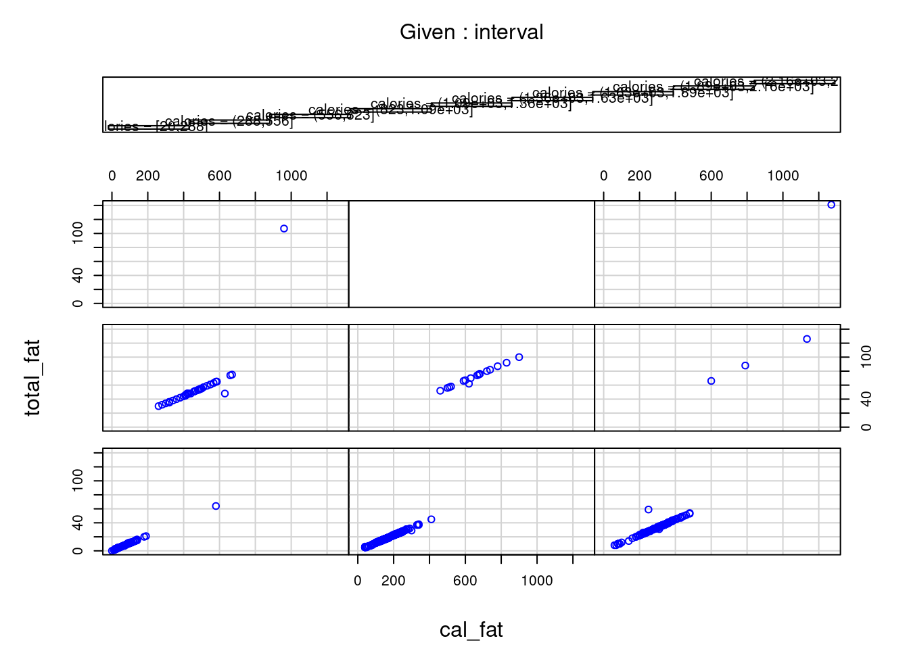

49 Tutorial for gg_cleveland
Mingyue Xu
Introduction and Tutorials for R-package ggcleveland
This is a new R-package for data visualization born in August, 2021, which provides functions to produce the ‘ggplot2’ versions of the visualization tools described in the book of William S. Cleveland, named ‘Visualizing Data’ (Cleveland W. S. (1993). “Visualizing Data”. Hobart Press.). Since this is a brand new package, few documents are produced to illustrate the proper usage of it. In this document, we show the power of this package with necessary explanations for some useful functions and specific examples. More specifically, we use the fastfood dataset to reflect our own understandings of the algorithms in the package. We will have the original book of William S. Cleveland as our main source and also a rough document on CRAN as a reference. Package source can be found here ‘https://github.com/mpru/ggcleveland’. We salute the author Marcos Prunello marcosprunello@gmail.com. We may find the original tutorials are really compact and lack of vivid examples, this is the purpose we would like to give a more specific explanation about ggcleveland. Indeed, there are also many useful datasets in this package like fusion, fly, etc. and we will not introduce them in this document.
- equal_count
This function applies the equal count algorithm to divide a set of observations into intervals which can have certain level of ovelapping. We see the following example for a more intuitive comprehension.
equal_count(df=fastfood, vble=calories, n_int=10, frac=0)## $intervals
## # A tibble: 10 × 5
## n lower upper count overlap
## <int> <dbl> <dbl> <table> <int>
## 1 1 15 215 54 6
## 2 2 205 305 57 7
## 3 3 295 355 56 0
## 4 4 355 425 53 7
## 5 5 415 495 64 8
## 6 6 485 565 58 6
## 7 7 555 645 59 10
## 8 8 635 735 58 7
## 9 9 725 895 56 1
## 10 10 885 2435 52 NA
##
## $df_long
## # A tibble: 567 × 19
## restaurant item calories cal_fat total_fat sat_fat trans_fat cholesterol
## <chr> <chr> <dbl> <dbl> <dbl> <dbl> <dbl> <dbl>
## 1 Mcdonalds Artisan … 380 60 7 2 0 95
## 2 Mcdonalds Single B… 840 410 45 17 1.5 130
## 3 Mcdonalds Double B… 1130 600 67 27 3 220
## 4 Mcdonalds Grilled … 750 280 31 10 0.5 155
## 5 Mcdonalds Crispy B… 920 410 45 12 0.5 120
## 6 Mcdonalds Big Mac 540 250 28 10 1 80
## 7 Mcdonalds Cheesebu… 300 100 12 5 0.5 40
## 8 Mcdonalds Cheesebu… 300 100 12 5 0.5 40
## 9 Mcdonalds Classic … 510 210 24 4 0 65
## 10 Mcdonalds Double C… 430 190 21 11 1 85
## # … with 557 more rows, and 11 more variables: sodium <dbl>, total_carb <dbl>,
## # fiber <dbl>, sugar <dbl>, protein <dbl>, vit_a <dbl>, vit_c <dbl>,
## # calcium <dbl>, salad <chr>, id <int>, interval <fct>Inputs: df: dataframe, vble: variable in df that need to be divided, n_int: number of intervals in result, frac: overlapping fraction required in result. Outputs: As we can see in the above example, there are two tables, where the first one shows the divided groups of the variable fastfood\(calories* with the counts and overlaps (with the next group) of each group. The other shows the corresponding dataframe of the original *fastfood* with two columns added. *id* represents its position in the original daraframe and *intervel* indicates which group it belongs to after division. We may find the size of the dataframe increases from 515 to 567, that is due to those overlapping observations, i.e. each observation appears as many times as the number of intervals in which it belongs. Properties: We may find that the groups divided by the *equal_count* algorithm are in a monotonously increasing order of *fastfood\)calories. Moreover, note that the new dataframe it returns are arranged by the class of fastfood$restaurant. Hence, using this method, we can simply generate a dataframe to show the level of calories for different restaurant by using some skills in the ggplot2 package, see
df <- equal_count(df=fastfood, vble=calories, n_int=10, frac=0)
ggplot(df[[2]], aes(interval)) +
geom_histogram(stat="count", color="blue", fill="lightblue") +
facet_grid(cols = vars(restaurant))Although we may find that the original histogram plot can also reflect the level comparison of calories between different restaurant, this histogram based on equal_count implies more information, e.g. Subway foods are likely to be in two extremes, that is either high-level calories or low-level calories.
- gg_coplot
This function implements conditional plots, which is a particularly powerful visualization tool for studying how a response depends on two or more factors. More concretely, in the following examples, there is a simple coplot example in the first plot. Moreover, We can find the difference between relation plot and conditional relation plot in the next two plots. Given (Conditioning on) the total_fat, sat_fat and trans_fat seem to have no explicitly uniform relation compared to the result in non-conditional plot. Hence, gg_coplot is useful for us to determine the conditional independence between variables.
fastfood$class <- as.factor(fastfood$restaurant)
fastfood$class <- as.numeric(fastfood$class)
gg_coplot(fastfood, x=cal_fat, y=calories, faceting=class, number_bins=8, overlap=0,
ylabel = "Calories", xlabel = "Calories from fat", loess_family = "gaussian", size = 2)
Here are explanations of some important parameters in the function. Inputs: df: dataframe, x: variable for x-axis, y: variable for y-axis, faceting: faceting numeric variable, number_bins: number of groups required to divide the faceting variable, overlap: overlapping fraction required for the faceting variable in result. Outputs: a coplot (conditional plot)
ggplot(data=fastfood, aes(x=trans_fat, y=sat_fat)) +
geom_point() +
geom_smooth()
gg_coplot(fastfood, x=sat_fat, y=trans_fat, faceting=total_fat, number_bins=9, overlap=0,
ylabel = "Saturated Fat", xlabel = "Trans Fat", loess_family = "gaussian", size = 2)This plot shows a wealth of information about the dependence of sat_fat on trans_fat. In total, each conditioning on total_fat has a nonlinear pattern. Except for the subplot (2,2) and (3,3), all the patterns seem to have a positive correlation between sat_fat and trans_fat given total_fat. However, both subplots (2,2) and (3,3) fail this conclusion and there is also difference between themselves. Hence, for the most part there is no interaction between the two factors, in other words, there seems to be no uniform effect of sat_fat on trans_fat. For the sake of comparison, let us see an example of conditional dependence as follow.
gg_coplot(fastfood, x=cal_fat, y=total_fat, faceting=calories, number_bins=9, overlap=0,
ylabel = "Total Fat", xlabel = "Calories from Fat", loess_family = "gaussian", size = 2)Coplots intervals must be chosen to compromise between two competing criteria, i.e. the number of points and resolution. On the one side, their lengths must be sufficiently great that the dependence panels have enough points for effects to be seen, if there are too few points on a dependence panel, noise in the data typically prevents points from coalescing into a meaningful pattern. On the other side, the lengths must be small enough to maintain reasonable resolution, if a conditioning interval is too big, there is a risk of a distorted view if the nature of the dependence changes dramatically as the value of the conditioning factor changes within the interval.
- gg_pt
This function returns normal QQ plots for a set of power transformations. Indeed, if we choose the power value to be 1, then it returns exactly a QQ plot, which is shown in the following example.
gg_pt(df=fastfood, vble=calories, taus = c(1),
xlabel = "Calories", ylabel = "Valores transformados", color = "red")
Inputs: df: dataframe, vble: variable need to do transformation, taus: vector of values for the power transformations. Note that the 0-power transformation is the log transformation, i.e. Power transformations are a class of transformations that includes the logarithm. Outputs: corresponding QQ plot after power transformation with given power values. The following plots are some examples related to different power transformation values.
gg_pt(df=fastfood, vble=calories, taus = c(-0.5, -1, 0, 1.2),
xlabel = "Calories", ylabel = "Valores transformados",
nrow = 2, color = "red")With a simple power transformation applied in the plot, we may find something interesting, for example, we may find the power transformation that brings a distribution the closest to symmetry based on the property of QQ plot. In our fastfood$calories case, this best parameter seems to be in between 0.25 and 0.50, see below.
gg_pt(df=fastfood, vble=calories, taus = c(-1, -0.75, -0.5, -0.25, 0, 0.25, 0.5, 0.75, 1),
xlabel = "Calories", ylabel = "Valores transformados",
nrow = 3, color = "blue")- gg_rf
gg_rf is one of the most practical functions in the package gg_cleveland, which returns a Residual-Fit plot, optionally including centered observed values. As is well-known, fitting data means finding mathematical descriptions of structure in the data. Such structural description of data can be as distributions differ only in location and not in spread or shape, which can be fitted by estimating location, i.e. computing a location measure for each distribution. Simply saying, for the \(p^{th}\) part of the data, let \(h_{pi}\) be the \(i^{th}\) measurement of height and let \(\bar{h}_{p}\) be the mean height and also the fitted value for \(h_{pi}\). Then the residuals are the deviations of the heights from the fitted values, i.e. \(\hat{\epsilon}_{pi}=h_{pi}-\bar{h}_{p}\). The fitted values account for the variation in the heights attributable to the variable through the fitting process. And the residuals are the remaining variation in the data after the variation due to the shifting means has been removed.
rfData <-
fastfood %>%
mutate(meanFat=mean(total_fat), res=total_fat-meanFat)
gg_rf(df=rfData, vble=total_fat, fitted=meanFat, res=res, color="red")Here is a simple example and let us understand what the plot is showing. Since the subtraction of means has removed the effect of individuals, the centered fitted values are zeros. The right residual plots shows the remaining parts after the subtraction of means, i.e. a reflection on the level of variation. We can also have another more complicated example based on our fastfood dataset, which seems to have a more compressed residual plot than previous one, but not so obviously and that is because the relation between total_fat and sat_fat is clearly far from linearity.
ggplot(data=fastfood, aes(x=sat_fat, y=total_fat)) +
geom_point() +
geom_smooth(method = "lm", formula = y ~ x) +
stat_poly_eq(formula = y ~ x,
aes(label = paste(..eq.label.., ..rr.label.., sep = "~~~")),
parse = TRUE)
newRfData <-
fastfood %>%
mutate(meanSF=mean(sat_fat), res=total_fat-2.43*meanSF)
gg_rf(df=newRfData, vble=total_fat, fitted=2.43*meanSF, res=res, color="red")
- make_coplot_df
It creates dataframes to be used in coplot, which is pretty useful when we are doing causal inference tasks. We start with a simple example to see what kind of dataset can be derived from this function.
dataCoplot <- make_coplot_df(df=fastfood, vble=calories, number_bins=9, overlap=0)
data1 <- dataCoplot$df_expanded
data2 <- dataCoplot$intervalsAs we can see, make_coplot_df returns a list of two dataframes. The first dataframe data1 is the original fastfood dataset with a new column of grouping intervels added at the end. The other dataframe data2 implies the information of grouping. Since the inputs of this function are similar to those previous, we leave this part and show how to use the created dataframes. Note that with such dataframe, we can immediately use the basic coplot function, which leads to the same result of gg_coplot, i.e. the following two plots are exactly the same.
coplot(total_fat ~ cal_fat | interval, data = data1, col="blue")
gg_coplot(fastfood, x=cal_fat, y=total_fat, faceting=calories, number_bins=9, overlap=0,
ylabel = "Total Fat", xlabel = "Calories from Fat", loess_family = "gaussian", size = 2)
- gg_quantiles
This function returns a quantile-quantile plot to compare any given number of groups. Let us recall the original QQ plot in library ggplot2, in the following example, we draw QQ plot with calories data for different restaurants.
ggplot(fastfood, aes(sample=calories, color = restaurant)) +
stat_qq() +
stat_qq_line()Does the gg_quantiles function do a similar task as above? The answer is no, as we can see in the definition of gg_quantiles, this function aims to compare any given number of groups with QQ plot, i.e. it focus on the relations and differences between groups. We provide the following example of using gg_quantiles to show how it campares calories between differnet restaurants.
gg_quantiles(df=fastfood, vble=calories, group=restaurant, color="red") +
theme(panel.spacing = unit(2, "lines")) +
theme_bw()Indeed, a large amount of information can be derived from the above graph. Clearly, we know that these QQ plots are symmetric along the diagonal. We may find out some closely similar pairs, e.g. (Dairy Queen, Sonic), (Burger King, Subway), … Also, there are some obvious higher calories pairs, e.g. (Dairy Queen, Mcdonalds), (Arbys, Mcdonalds), …
- gg_tmd
This function returns a Tukey’s Mean-Difference plot for one-way data. A Tukey mean-difference plot (or simply a m-d plot) can add substantially to our visual assessment of a shift between two distributions. Suppose that we have two variables \(b_{i}\) and \(t_{i}\) compared in a QQ plot, then in a corresponding m-d plot, the difference \(b_{i}-t_{i}\) are graphed against the means \(\frac{b_{i}+t_{i}}{2}\), and the line \(b=t\) on the QQ plot becomes the zero line on the m-d plot. A shift is assessed by judging deviations from the zero line. The intuition behind the m-d plot is that this often enhances our perception of effects because we can more readily judge deviations from a horizontal line than from a line with nonzero slope. More concretely, see the following example, which is directly extended from the above QQ plot among restaurants.
gg_tmd(df=fastfood, vble=calories, group=restaurant, color="red")With such m-d plot, the comparison of the two distributions can be summarized by the simple statement that the distribution of one variable heights is greater or lower than the other one. This is good news since many examples will show that shifts between distributions can be complex.
Finally, we provide an interesting example based on environmental, one of the included datasets. A brief description of this dataset can be found in the CRAN document (for ggcleveland) as: 1). These measurements were made on 111 days from May to September of 1973 at sites in the New York City metropolitan region; there is one measurement of each variable on each day. 2). Solar radiation is the amount from 800 to 1200 in the frequency band 4000A-7700A, and was measured in Central Park, New York City. 3). Wind speed is the average of values at 700 and 1000, and was measured at LaGuardia Airport, which is about 7 km from Central Park. 4). Temperature is the daily maximum, and was also measured at LaGuardia. 5) .Ozone is the cube root of the average of hourly values from 1300 to 1500, and was measured at Roosevelt Island, which is about 2 km from Central Park and 5 km from LaGuardia".
It seems like the environmental is a quite simple data, however, many works can be done with the application of ggcleveland. The goal in analyzing the environmental data is to determine how ozone depends on the other variables. A simple way to visualize hypervariate data is to graph each pair of variables by a scatterplot, see
spm(environmental[2:5], smooth=FALSE)A lot of information contained in this scatterplot matrix (spm) graph. For example, with the subplot (1,3) of Ozone against Solar radiation, we can receive two messages. First, the highest values of Ozone occur when Solar radiation is between 200 and 300 langleys. Second, for the very highest values of Solar radiation, Ozone stays at low levels. However, the spm technique is not what we want to focus on, our goal here is to use the algorithms in ggcleveland. The scatterplot matrix of the environmental data shows a strong association between Ozone and Temprature and between Ozone and Wind speed. It seems likely that each of these factors explains variation in the data not explained by the others. But there is less evidence that Solar radiation explains variation in Ozone given Temprature and Wind speed. For example, we saw that the upper envelope on the scatterplot of Ozone against Solar radiation was explainable by the behavior of Temprature and Wind speed. But the photochemistry that results in Ozone requires Solar radiation, and the laws of chemistry must be obeyed, so we know in principle that Solar radiation is a causal factor. But this does not mean that for the environmental data, the Solar radiation measurements are good predictors of Ozone. Perhaps only a minimum amount of Solar radiation is needed, and beyond that, production is not sensitive to the amount. Hence, we need a way to see the conditional dependence between these variables, i.e. a hypervariate coplot, see
environmental1 <- environmental
environmental1$ozono <- environmental1$ozono^(1/3)
coplot(ozono ~ radiacion | temperatura * viento, data=environmental1, number=4, overlap=0.4, xlab = "Solar radiation", ylab = "Cube Root Ozone", col = "blue", bg = "pink", pch=21)\(\textbf{By refering the source code of *gg_coplot* at **https://github.com/mpru/ggcleveland/blob/master/R/gg_coplot.R**, we have to admit that this function is unable to draw a conditional plot given two variables, which is indeed a shortcoming of this newborn function}\). Note that the conditioning intervals of the above figure have been chosen using the equal_count method with a target fraction of overlap 0.4, thus, the number of values of the conditioning factor in each interval is roughly constant. These coplots shows rather convincingly that Solar radiation explains variation in the Ozone measurements beyond that explained by Wind speed and Temperature. Clearly, we have three coplots for three factors Solar radiation, Temperature and Wind speed.
Fitting is essential to visualizing hypervariate data and the fit here for a hypervariate dataset is a hypervariate surface, a function of three or more variables, a function of Solar radiation, Wind speed and Temperature. The strategy for displaying a fitted hypervariate surface, is exactly to use conditioning. Suppose u is one of the factors. We can assign values to all other factors, and obtain the graph against u given these assigned, or conditioning values. \(\textbf{However, certain difficulty arose because *coplot* is unable to add the fitting curve (surface) but *gg_coplot* is able to do so; On the other hand, *coplot* can condition on two variables but *gg_coplot* is unable to do so}\). In the following example, we address this dilemma by applying the previous mentioned make_coplot_df method.
data_coplot <- make_coplot_df(df=environmental1, vble=temperatura, number_bins=4, overlap=0.4)
df1 <- data_coplot$df_expanded
df1$group <- df1$interval
data_coplot <- make_coplot_df(df=df1, vble=viento, number_bins=4,overlap=0.4)
df2 <- data_coplot$df_expanded
df2$class1 <- as.factor(df2$interval)
df2$class1 <- as.numeric(df2$class1)
df2$class2 <- as.factor(df2$group)
df2$class2 <- as.numeric(df2$class2)
df2$class <- df2$class1*10+df2$class2
classDf <- data.frame(temp_interval=df2$group, wind_interval=df2$interval, class_label=df2$class)
classDf <- unique(classDf)
show(classDf)## temp_interval wind_interval class_label
## 1 temperatura = [56.50, 75.50] viento = [2.05, 8.85] 11
## 6 temperatura = [68.50, 81.50] viento = [2.05, 8.85] 12
## 19 temperatura = [76.50, 86.50] viento = [2.05, 8.85] 13
## 38 temperatura = [81.50, 97.50] viento = [2.05, 8.85] 14
## 66 temperatura = [56.50, 75.50] viento = [7.15, 10.55] 21
## 79 temperatura = [68.50, 81.50] viento = [7.15, 10.55] 22
## 97 temperatura = [76.50, 86.50] viento = [7.15, 10.55] 23
## 117 temperatura = [81.50, 97.50] viento = [7.15, 10.55] 24
## 135 temperatura = [56.50, 75.50] viento = [8.95, 12.25] 31
## 157 temperatura = [68.50, 81.50] viento = [8.95, 12.25] 32
## 177 temperatura = [76.50, 86.50] viento = [8.95, 12.25] 33
## 195 temperatura = [81.50, 97.50] viento = [8.95, 12.25] 34
## 206 temperatura = [56.50, 75.50] viento = [10.65, 20.95] 41
## 231 temperatura = [68.50, 81.50] viento = [10.65, 20.95] 42
## 251 temperatura = [76.50, 86.50] viento = [10.65, 20.95] 43
## 266 temperatura = [81.50, 97.50] viento = [10.65, 20.95] 44
gg_coplot(df2, x=radiacion, y=ozono, faceting=class, number_bins=16, overlap=0, show_intervals = FALSE,
ylabel = "Cube Root Ozone", xlabel = "Solar radiation", loess_family = "gaussian", size = 2)There are also many other interesting experiments can be conducted based on the gg_cleveland package. Visualization is critical to data analysis and tools matter. There are exceptionally powerful visualization tools, and there are also others, some well known, that rarely outperform the best ones. Hope more and more R-packages can be created to be a stage of those powerful Data Visualization methods.